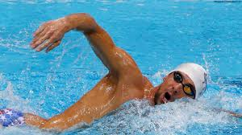

|  |
Swimming has been a sport at every modern Summer Olympics . It has been open to women since 1912 . Along with track & field athletics and gymnastics it is one of the most popular spectator sports at the Games and the one with the second largest number of events (after Athletics). Times have consistently dropped over the years due to better training techniques and to new developments in the sport. |
In the first four Olympics, competitions were not held in pools, but rather in open water (1896, the Mediterranean Sea ; 1900, the Seine; 1904, an artificial lake; 1906, the Mediterranean). The 1904 Olympics ' races were the only ones ever measured at yards, instead of the usual metres. A 100-metre pool was built for the 1908 Olympics and sat in the centre of the main stadium's track and field oval. The 1912 Olympics , held in the Stockholm harbour, marked the beginning of electrical timing.
Male swimmers wore full body swimsuits up until the 1940s, which caused more drag in the water than their modern swim-wear counterparts. Also, over the years, pool designs have lessened the drag. Some design considerations allow for the reduction of swimming resistance making the pool faster. Namely, proper pool depth, elimination of waves, elimination of currents, increased lane width, energy absorbing racing lane lines and gutters, and the use of other innovative hydraulic, acoustic, illumination, and swimwear designs.
The 1924 Olympics were the first to use the standard 50 metre pool with marked lanes. In the freestyle, swimmers originally dove from the pool walls, but diving blocks were incorporated starting at the 1936 Summer Olympics . The flip-turn was developed by the 1950s. Swimming goggles were first allowed in 1976 .
The butterfly stroke events were not held until 1956. According to the rules before then, the butterfly stroke was allowed in the breaststroke races - but then the contest rules were changed, abolishing the use of the butterfly stroke in the breaststroke races.
Women were first allowed the longer distance of 800 metres freestyle in 1968, which remains the longest distance for women. Up until then, women were considered to be too "delicate" to swim a race this long, even though the men had had the 1,500 metre freestyle from the very early years.
Both men and women were granted the 200 metre freestyle race in 1968, giving swimmers an intermediate distance race between 100 metres and 400 metres.
Women's teams were first granted the 800 metre freestyle relay race in 1996 - even though there had been a men's relay race at that distance since 1912. At six Olympiads, the men had two freestyle relay races, but the women only had one. Now, both sexes have two.
The medley relay races (4×100 metres) were not held for men or for women until 1960, but they have continued in every Olympiad since then.
| Event | Year | Standing | ||
|
2012 | Sliver | ||
| 200m Butterfly Men | 2012 | Silver | ||
| 400m Individual Medley Men | 2008 | Gold | ||
| 4x100m Freestyle Relay Men | 2008 | Gold |